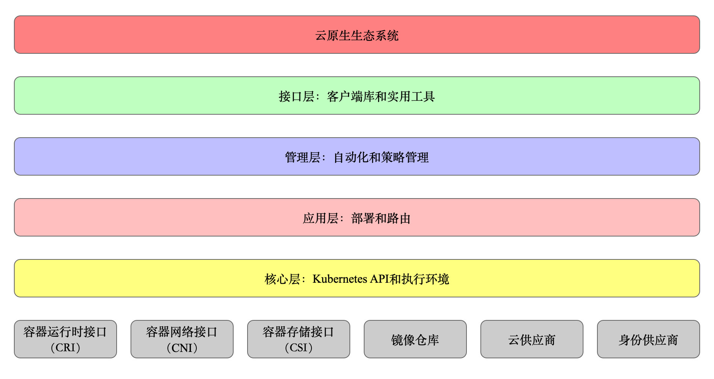

分层架构
Kubernetes 设计理念和功能其实就是一个类似 Linux 的分层架构

- 核心层：Kubernetes 最核心的功能，对外提供 API 构建高层的应用，对内提供插件式应用执行环境
- 应用层：部署（无状态应用、有状态应用、批处理任务、集群应用等）和路由（服务发现、DNS 解析等）
- 管理层：系统度量（如基础设施、容器和网络的度量），自动化（如自动扩展、动态 Provision 等）以及策略管理（RBAC、Quota、PSP、NetworkPolicy 等）
- 接口层：kubectl 命令行工具、客户端 SDK 以及集群联邦
- 生态系统：在接口层之上的庞大容器集群管理调度的生态系统，可以划分为两个范畴
- Kubernetes 外部：日志、监控、配置管理、CI、CD、Workflow、FaaS、OTS 应用、ChatOps 等
- Kubernetes 内部：CRI、CNI、CVI、镜像仓库、Cloud Provider、集群自身的配置和管理等
API 设计原则
对于云计算系统，系统 API 实际上处于系统设计的统领地位，正如本文前面所说，Kubernetes 集群系统每支持一项新功能，引入一项新技术， 一定会新引入对应的 API 对象，支持对该功能的管理操作，理解掌握的 API，就好比抓住了 Kubernetes 系统的牛鼻子。Kubernetes 系统 API 的设计有以下几条原则
所有 API 应该是声明式的。 正如前文所说，声明式的操作，相对于命令式操作，对于重复操作的效果是稳定的，这对于容易出现数据丢失或重复的分布式环境来说是很重要的。 另外，声明式操作更容易被用户使用，可以使系统向用户隐藏实现的细节，隐藏实现的细节的同时，也就保留了系统未来持续优化的可能性。此外，声明式的 API，同时隐含了所有的 API 对象都是名词性质的，例如 Service、Volume 这些 API 都是名词，这些名词描述了用户所期望得到的一个目标分布式对象。
API 对象是彼此互补而且可组合的。 这里面实际是鼓励 API 对象尽量实现面向对象设计时的要求，即 “高内聚，松耦合”，对业务相关的概念有一个合适的分解，提高分解出来的对象的可重用性。 事实上，Kubernetes 这种分布式系统管理平台，也是一种业务系统，只不过它的业务就是调度和管理容器服务。
高层 API 以操作意图为基础设计。 如何能够设计好 API，跟如何能用面向对象的方法设计好应用系统有相通的地方，高层设计一定是从业务出发，而不是过早的从技术实现出发。因此，针对 Kubernetes 的高层 API 设计，一定是以 Kubernetes 的业务为基础出发，也就是以系统调度管理容器的操作意图为基础设计
低层 API 根据高层 API 的控制需要设计。 设计实现低层 API 的目的，是为了被高层 API 使用，考虑减少冗余、提高重用性的目的，低层 API 的设计也要以需求为基础，要尽量抵抗受技术实现影响的诱惑。
尽量避免简单封装，不要有在外部 API 无法显式知道的内部隐藏的机制。 简单的封装，实际没有提供新的功能，反而增加了对所封装 API 的依赖性。内部隐藏的机制也是非常不利于系统维护的设计方式，例如 StatefulSet 和 ReplicaSet，本来就是两种 Pod 集合，那么 Kubernetes 就用不同 API 对象来定义它们，而不会说只用同一个 ReplicaSet，内部通过特殊的算法再来区分这个 ReplicaSet 是有状态的还是无状态。
API 操作复杂度与对象数量成正比。 这一条主要是从系统性能角度考虑，要保证整个系统随着系统规模的扩大，性能不会迅速变慢到无法使用，那么最低的限定就是 API 的操作复杂度不能超过 O(N)，N 是对象的数量，否则系统就不具备水平伸缩性了。
API 对象状态不能依赖于网络连接状态。 由于众所周知，在分布式环境下，网络连接断开是经常发生的事情，因此要保证 API 对象状态能应对网络的不稳定，API 对象的状态就不能依赖于网络连接状态。 尽量避免让操作机制依赖于全局状态，因为在分布式系统中要保证全局状态的同步是非常困难的。
控制机制设计原则
控制逻辑应该只依赖于当前状态。 这是为了保证分布式系统的稳定可靠，对于经常出现局部错误的分布式系统，如果控制逻辑只依赖当前状态，那么就非常容易将一个暂时出现故障的系统恢复到正常状态， 因为你只要将该系统重置到某个稳定状态，就可以自信的知道系统的所有控制逻辑会开始按照正常方式运行。
假设任何错误的可能，并做容错处理。 在一个分布式系统中出现局部和临时错误是大概率事件。错误可能来自于物理系统故障，外部系统故障也可能来自于系统自身的代码错误， 依靠自己实现的代码不会出错来保证系统稳定其实也是难以实现的，因此要设计对任何可能错误的容错处理。
尽量避免复杂状态机，控制逻辑不要依赖无法监控的内部状态。 因为分布式系统各个子系统都是不能严格通过程序内部保持同步的，所以如果两个子系统的控制逻辑如果互相有影响，那么子系统就一定要能互相访问到影响控制逻辑的状态， 否则，就等同于系统里存在不确定的控制逻辑。
假设任何操作都可能被任何操作对象拒绝，甚至被错误解析。 由于分布式系统的复杂性以及各子系统的相对独立性，不同子系统经常来自不同的开发团队，所以不能奢望任何操作被另一个子系统以正确的方式处理， 要保证出现错误的时候，操作级别的错误不会影响到系统稳定性。
每个模块都可以在出错后自动恢复。 由于分布式系统中无法保证系统各个模块是始终连接的，因此每个模块要有自我修复的能力，保证不会因为连接不到其他模块而自我崩溃。
每个模块都可以在必要时优雅地降级服务。 所谓优雅地降级服务，是对系统鲁棒性的要求，即要求在设计实现模块时划分清楚基本功能和高级功能，保证基本功能不会依赖高级功能， 这样同时就保证了不会因为高级功能出现故障而导致整个模块崩溃。根据这种理念实现的系统，也更容易快速地增加新的高级功能，因为不必担心引入高级功能影响原有的基本功能。
Etcd 解析
Etcd 是 Kubernetes 集群中的一个十分重要的组件，用f于保存集群所有的网络配置和对象的状态信息。 整个 Kubernetes 系统中一共有两个服务需要用到 etcd 用来协同和存储配置，分别是：
网络插件 flannel、对于其它网络插件也需要用到 etcd 存储网络的配置信息 Kubernetes 本身，包括各种对象的状态和元信息配置